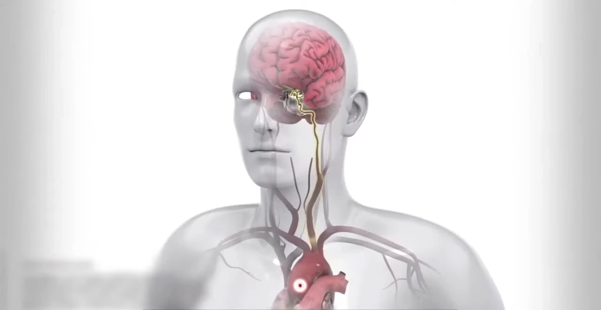

一次体检发现的"卵圆孔未闭"
"我又不胖、不抽烟、还经常跑步，怎么就脑梗了？"——这是很多年轻卒中患者走进诊室的第一句话。答案，有时藏在心脏上那个本该闭合的小孔里。
一、一个让人困惑的年轻人
记得有位 30 岁出头的男患者，平时身体很好，体检却在一次常规筛查中发现了问题：没有明显高血压、糖尿病、高血脂，也没有吸烟史，却突发了一次小中风（脑梗死）。做了全套血管检查，大血管干干净净。最后，是经食管心脏超声（TEE）揭开了谜底——他的心脏上，卵圆孔没有闭合。
二、卵圆孔，是什么？
卵圆孔是胎儿时期心脏左右心房之间的一扇"临时小门"，目的是让母体的含氧血绕过尚未工作的肺。出生后随着肺脏开始呼吸，这扇门大多会在 1 岁内自然闭合。但约有 四分之一的成年人，这扇门始终留着一条缝隙——这就是"卵圆孔未闭（PFO）"。绝大多数人一辈子毫无症状，所以很多人直到做了检查才知道自己有。
三、它和脑梗有什么关系？
正常情况下，左心房压力高于右心房，缝隙是"单向"的，问题不大。但在用力屏气、剧烈运动、咳嗽等情况下，右心房压力一过性升高，静脉系统里的小血栓或微小气泡就可能"逆行"穿过未闭的卵圆孔，直接进入左心、打向脑动脉，造成"矛盾栓塞"——这正是部分隐源性卒中（原因不明的中风）的元凶，尤其常见于没有传统危险因素的年轻人。

下面这段竖版动画演示了血栓从静脉系统出发、经心脏的 PFO 通道抵达脑部的完整路径——封堵术的原理，就是把这扇"后门"关掉：
四、发现了，一定治吗？
不一定。是否干预，取决于：是否为隐源性卒中、有无其他右向左分流证据、以及个体风险。对于明确由 PFO 引起、且复发风险较高的卒中患者，指南推荐在充分评估后行经导管卵圆孔封堵术，并配合抗血小板/抗凝治疗；而无症状、无栓塞事件的人群，通常只需观察、定期随访即可。
- 有不明原因卒中/短暂性脑缺血（TIA）史 → 建议心内科+神经科联合评估；
- 反复偏头痛且合并 PFO → 可讨论，但封堵对偏头痛的获益证据尚不充分；
- 体检偶然发现、无任何症状 → 多数无需处理，不必过度焦虑。
关于 PFO 更系统、更完整的讲解（含诊断流程、治疗指征与大众须知），可以回到我的科普主页查看 「疾病科普 · 卵圆孔未闭」 词条。